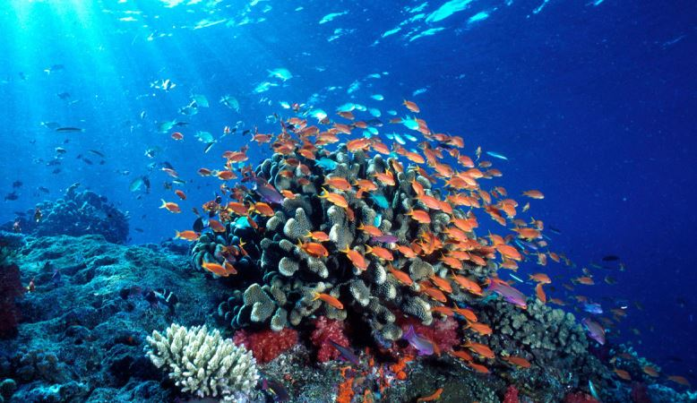
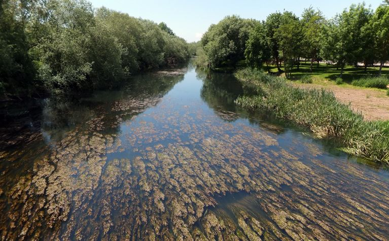

Que es?? |
Variaciones de ecosistemas.. |
|---|---|
|
Los ecosistemas acuáticos son todos aquellos ecosistemas que tienen por biotopo o biotipo algún cuerpo de agua, como pueden ser: mares, océanos, ríos, lagos, pantanos, arroyos y lagunas, entre otros. Los dos tipos más destacados son: los ecosistemas marinos y los ecosistemas de agua dulce.El montante, variaciones y regularidad de las aguas de un río son de gran importancia para las plantas, animales y personas que viven a lo largo de su curso. La fauna de los ríos es de anfibios, peces y una variedad de invertebrados acuáticos. Los ríos y sus zonas de inundación sostienen diversos y valiosos ecosistemas, no sólo por la cualidad del agua dulce para permitir la vida, sino también por las numerosas plantas e insectos que mantiene y que forman la base de las cadenas tróficas. En el lecho de los mares, los peces se alimentan de plantas y los insectos son comidos por las aves, anfibios, reptiles y mamíferos. |
|
Marinos |
Dulce |
|---|---|
|
Es el ambiente marino, también denominado halobios. La clasificación de ecosistema marino incluye océanos, mares, marismas …etc. Estos medios son sumamente estables de cara al desarrollo de la vida en comparación con cualquier sistema terrestre de agua dulce. En verdad, la vida brotó en el mar y hasta el día de hoy sigue siendo un sitio excepcional de cara al desarrollo de exactamente la misma.  |
Es el ambiente de agua dulce, también denominado limnobios. En esta clasificación encontramos los lagos, ríos, pantanos… etc. Forman parte de una suma importancia para especies de todo género y de todo color, tanto faunística como de vegetación. Por lo general hallamos muchos anfibios, también se puede localizar un enorme número peces asociados a ellos. La extensa presencia de flora es entre las peculiaridades de los ecosistemas de agua dulce. Lo curioso de los ríos, es que las condiciones pueden cambiar entre tramos y regiones, con lo que un mismo río puede tener múltiples microecosistemas.  |
|
|
|